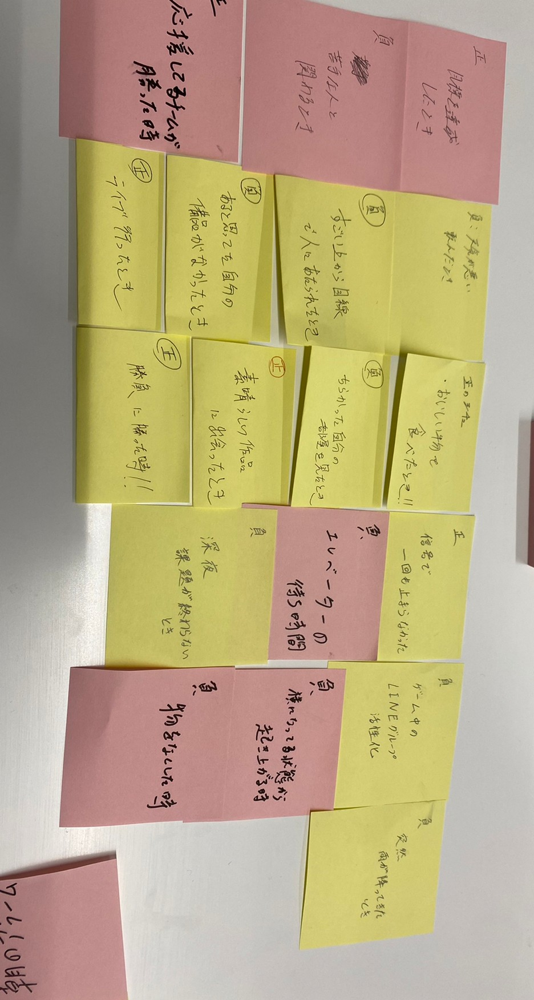
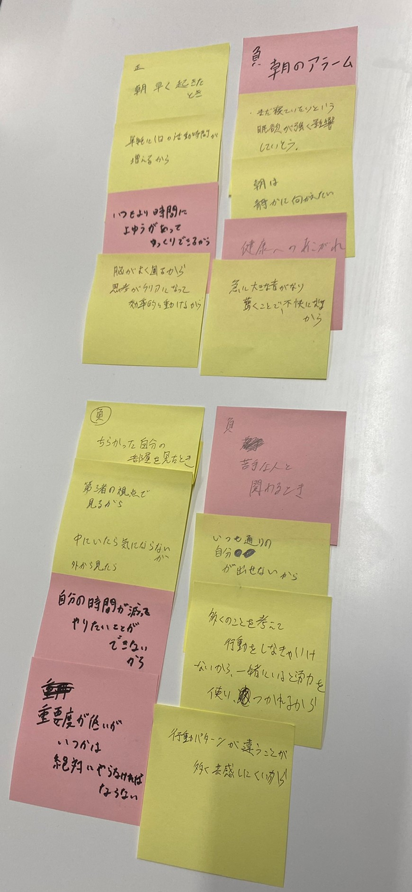

デザイン演習第2回
ポストイット


POV 1
①私たちは散らかった部屋を見て負の感情を抱くという人に会った
②その人は綺麗な部屋を必要としていた
③私たちはなぜ負の感情を抱かないために片付けする事ができるのに片付をしないのかに驚いた
④この洞察は、自分の時間をどうやって効率よく使う事ができるか、
いつかやらなければいけない事をいつするのか、第三者に見られる事が嫌なのかどうかなどの考察から
負の感情にならない環境を求める人のニーズを満たす方法を私たちに示しているのではないか？
POV 2
①私たちは苦手な人と関わる時に負の感情を抱くという人に会った
②その人は苦手な人とか変わらない方法か対処方法を必要としていた
③私たちは日本人特有の意思表示の弱さに驚いた
④この洞察は、苦手な人と関わらないようにしたい人や、
関わらなければいけない時に何を犠牲にして何を優先するかの決断力,
を持ちたい人のニーズを満たす方法を私たちに示しているのではないか？,